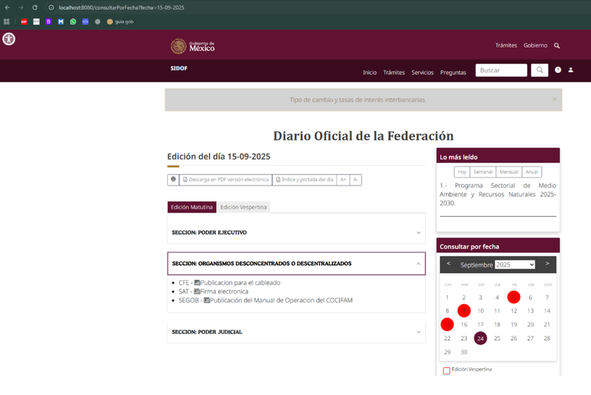
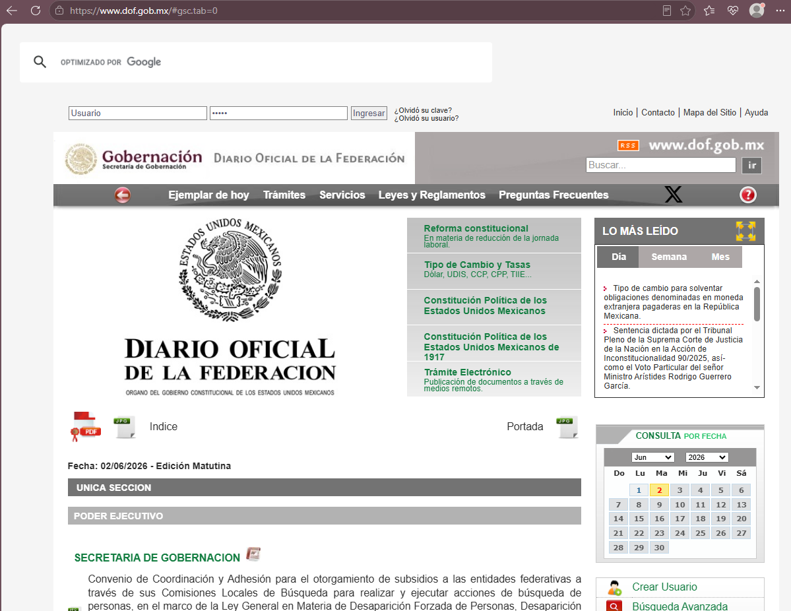
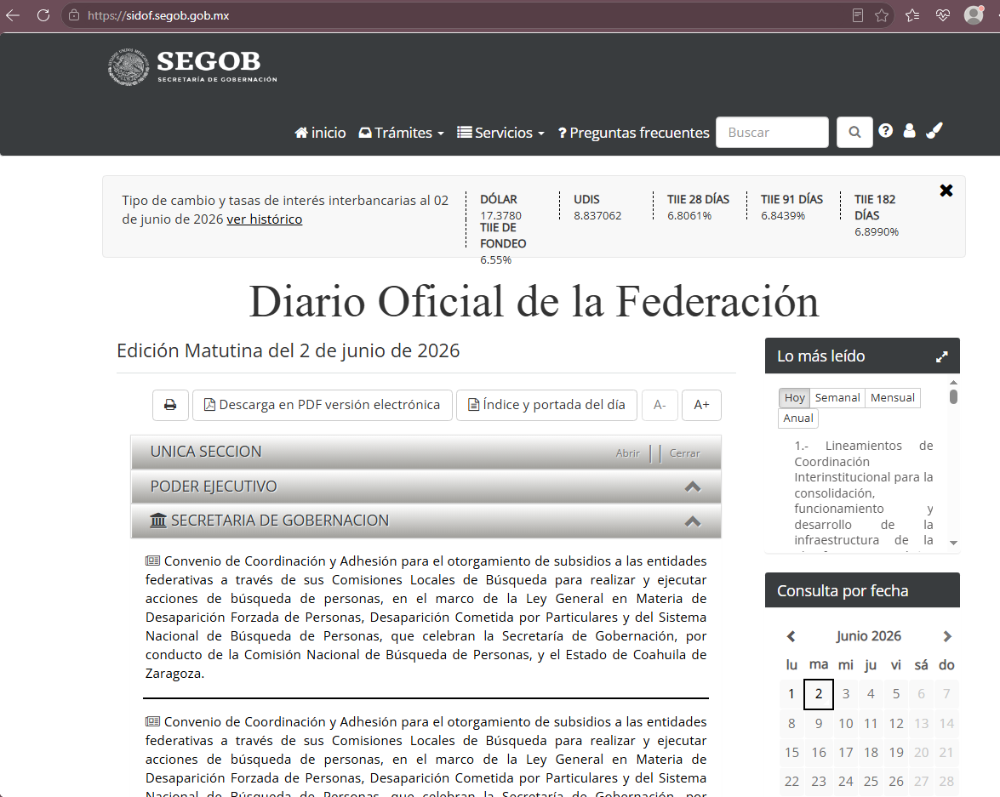
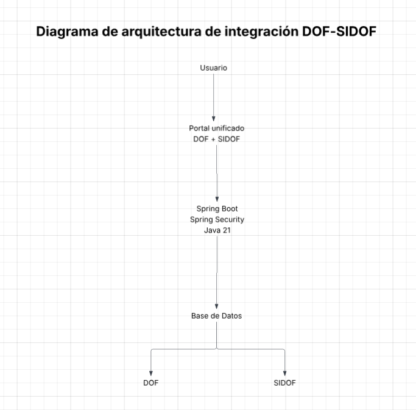
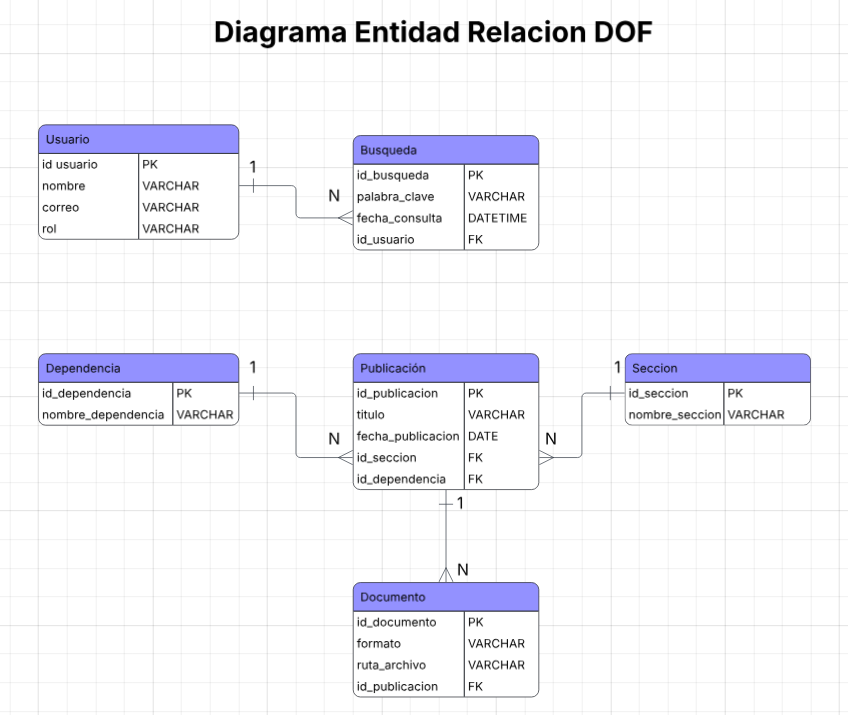
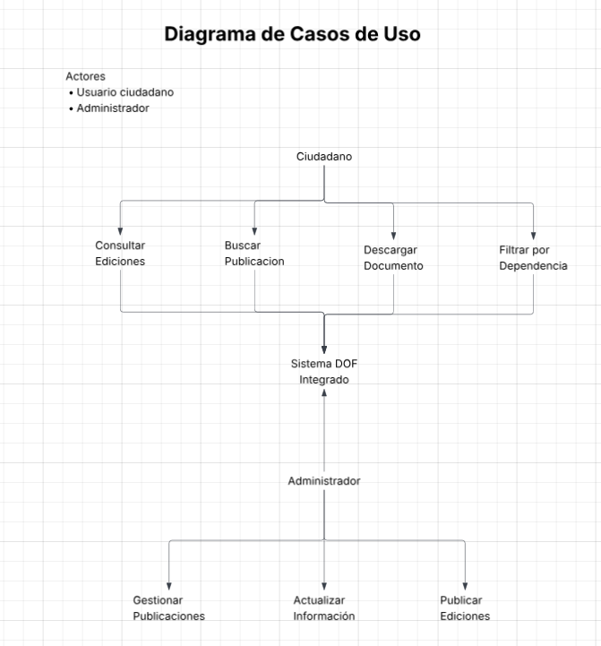
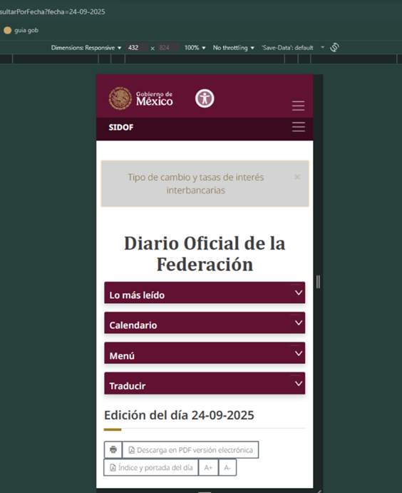

Proyecto enfocado en la integración visual y funcional del Diario Oficial de la Federación para unificar la experiencia de consulta entre el DOF tradicional y SIDOF.

El Diario Oficial de la Federación contaba con dos plataformas separadas: el DOF tradicional y SIDOF, una versión moderna que dependía de la información generada por el sistema anterior.
Esta separación provocaba diferencias visuales y una experiencia fragmentada para los usuarios al consultar información oficial.


Diseñar una propuesta de integración visual y funcional que permitiera unificar la experiencia de usuario, conservar la identidad institucional del Gobierno de México y mejorar la navegación dentro de la plataforma.
Se realizó un análisis de la arquitectura existente para comprender la relación entre DOF y SIDOF, identificar dependencias y definir oportunidades de integración.

Se elaboró un diagrama Entidad-Relación para comprender la estructura de la información y las relaciones entre usuarios, publicaciones, documentos, dependencias y búsquedas.

Como parte de la propuesta se definieron los principales flujos de interacción para los usuarios, buscando simplificar la consulta y navegación entre los servicios del DOF y SIDOF.

Como parte de la propuesta de integración, se desarrolló una interfaz adaptable a distintos tamaños de pantalla, garantizando una experiencia de usuario consistente tanto en equipos de escritorio como en dispositivos móviles.
Se realizaron ajustes en la distribución de componentes, navegación y jerarquía visual para facilitar la consulta de información oficial desde cualquier dispositivo.

La propuesta visual y funcional fue desarrollada y validada. La integración definitiva con la base de datos institucional se encontraba pendiente de una etapa posterior del proyecto, por lo que la plataforma quedó preparada para su conexión futura.
El proyecto permitió visualizar una experiencia unificada para la consulta del Diario Oficial de la Federación, mejorando la organización de la información, la consistencia visual y la experiencia de navegación para los usuarios.